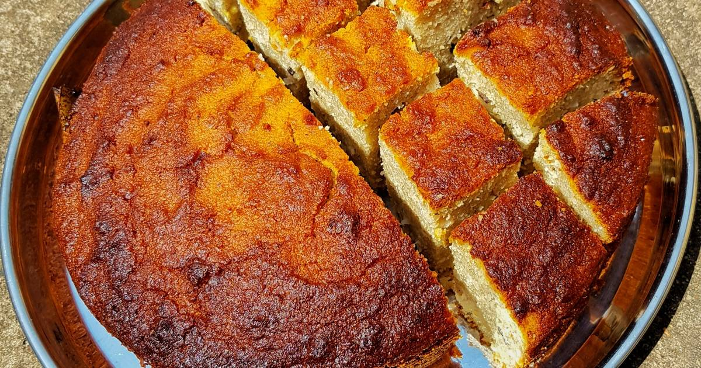

Pakhala Bhata is the daily lunch for almost every household in Odisha during summers. It is prepared by soaking cooked rice in water and sour curd. Typically left overnight, and often served with potatoes, fried fish, papad and Badi choora, which is dried and nut-like urad and black gram. This fermented rice is the perfect dish to beat the heat and refreshes you from within. 20th March is celebrated as Pakhala Dibasa (Universal Pakhala Day) by all Odias to welcome summer season with Odisha's traditional food. This sumptuous meal is a must try.
Known as Panipuri in Western India, Puchka in Bengal, Golgappa in the north and Gupchup in Odisha. This quick snack, which has almost become a staple across the nation, needs no introduction. This extremely popular street food comprises of small and crisp puris made from the dough of suji, maida and atta served together with chana masala and khatta Jal jeera. Probably one food which is loved by every age group and enjoyed at any time of the day. The best thing about this dish is that it is so cheap and light that you often see gupchup eating competitions on your streets. Without a doubt, it is everyone's favourite!
Odisha's very own cheesecake! The one sweet that Odisha is famous for - Chhena Poda, also known to be Lord Jagannath's favourite sweet and is often offered to him at the Puri Temple. The lingering taste of burnt home-made cottage cheese and semolina combined with sugar syrup simply blow away your mind. This rare dessert is baked for several hours until it becomes red and the caramelised sugar brings out the distinct flavour of Chhena Poda. Being sold in almost every nook and corner, this dish is simple, easy and absolutely delicious.
Pilaf (Pulao) is a rice dish in a seasoned broth. When sauteed lightly in oil the rice attains a golden brown colour with the aroma of mixed spices. Depending on specific cultures, the dish is prepared as a variety which includes meat, vegetables, dry fruits and even pasta. The culinary of pilaf spread over states to countries worldwide. It is a staple dish in Odisha cuisine.
This classic Oriya dish is a fried or boiled vegetable curry that slurps down your tongue with every spoon. With a blend of raw papaya, potato, tomato and brinjal, the dish is nothing less compared to any other healthy food. As the recipe is low on spices and high on greens, it is most commonly eaten for a healthy diet. You may want the dish to be mildly sauteed with milk and spices for an extra taste.
The sweet dished is garnished with cardamoms and soaked in thick flavoured milk. Served in Lord Jagannath temple as a part of chappana bhogas, this delicacy trace its origin from Kendrapara district in Odisha.

Generally prepared during Raja Festival or Swing Festival of Odisha, Podo Pitha is another popular sweet dish of Odisha. Slowly cooked in clay ovens, this has fermented rice, black gram, coconut and cardamom as main ingredients. The burnt texture resulting from caramelized jaggery enhances the supreme taste of this local food of Odisha.
Chaula Bara are immensely scrumptious crispy balls that are made with primarily urad Dal and rice. Light, fluffy, and tasty; this dish is for you to keep longing for more! 4 parts rice and 1 part Urad Dal are soaked overnight (minimum 8 hours) and blended into a medium coarse paste. Ingredients like cumin seeds, carom seeds, coriander leaves, a pinch of baking soda, salt and pepper are added to this paste. A bit of mixing, and it's ready to fry and binge on! Best served with a tangy chutney of your choice.
A crisp, cracking and worth cherishing sweet dish, Khaja. It's a burst of flavour and texture, with very few ingredients, and a whole lot of techniques. There's just refined flour, clarified butter, sugar, water, cardamom and rose water (optional). The dough is kneaded using flour and ghee, to prepare thin tortillas. These tortillas are then layered one above the other, with the help of ghee and dry flour. Around 6 layers are formed before rolling them and cutting into pieces. A bit of flattening from the sides, and they get into deep-frying until golden. Coated in flavoured sugar syrup at the end, and the layered, crunchy goodness is ready to relish!
A special dish prepared with potato and pointed gourd. It is one of the popular curries in the state of Orissa. Also known as Parwal in North India, this dish is offered to God at the Puri Jagannath temple. A bit of cashew paste or onion/ginger paste makes it more savoury.